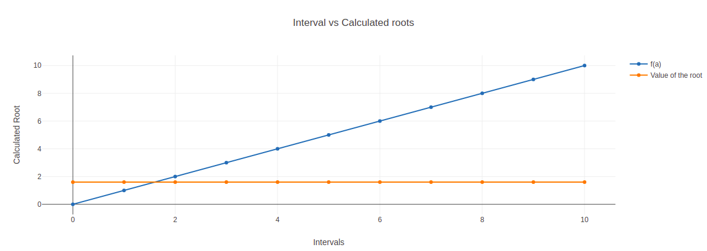

For finding the roots of linear, quadratic and third degree polynomial using Iterative-Method
The fixed point iteration method in numerical analysis is used to find an approximate solution to algebraic and transcendental equations. Sometimes, it becomes very tedious to find solutions to cubic, bi-quadratic and transcendental equations; then, we can apply specific numerical methods to find the solution; one among those methods is the fixed point iteration method.
The fixed point iteration method uses the concept of a fixed point in a repeated manner to compute the solution of the given equation. A fixed point is a point in the domain of a function g such that g(x) = x. In the fixed point iteration method, the given function is algebraically converted in the form of g(x) = x.
Suppose we have an equation f(x) = 0, for which we have to find the solution. The equation can be expressed as x = g(x). Choose g(x) such that |g'(x)| < 1 at x = xo where xo,is some initial guess called fixed point iterative scheme. Then the iterative method is applied by successive approximations given by xn = g(xn - 1), that is, x1 = g(xo), x2 = g(x1) and so on.
# Python program for implementation of Iteration-Method for algebraic equations
# Taking input for the guess
a= float(input("Enter the value a: "))
b= 0
# Function is defined here: 2*x**3-2*x-5
def iterative(x):
return ((2*x+5)/2)**1/3
# Root of the function is calculated here..
for i in range(10):
b= iterative(a)
a=b
# Root is displayed here.
print("Root of the given function is ",b)
Take Observations from the method and tabulate it for the given intervals.
Plot a graph also. (function vs root).

Hence we findout the roots for the given polynomial.